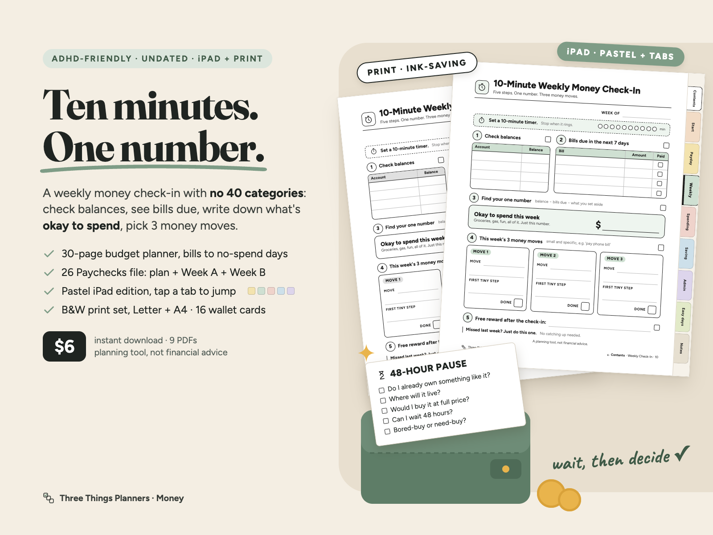
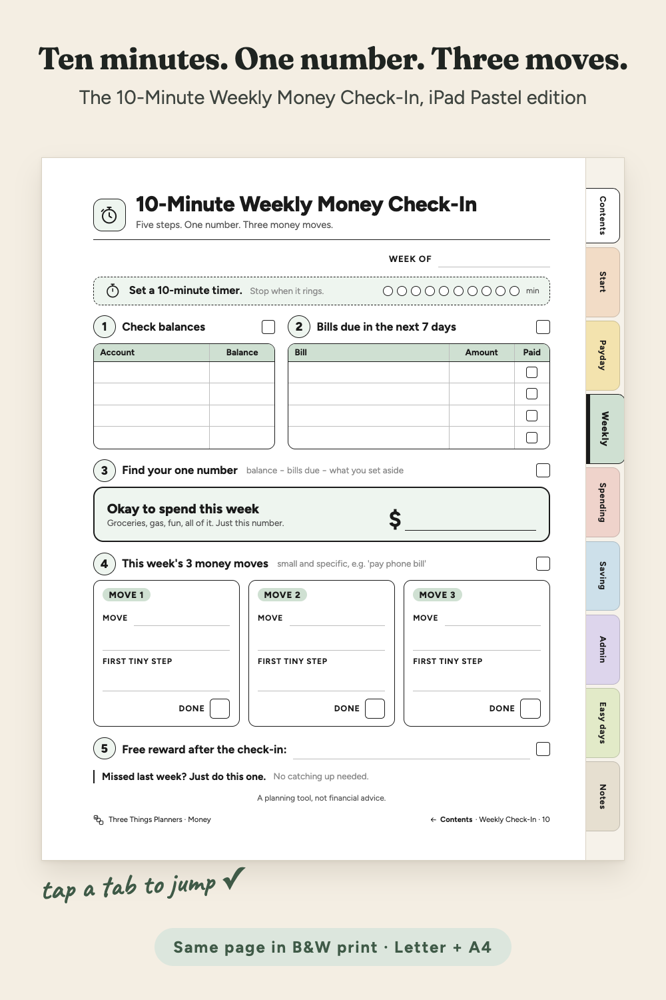
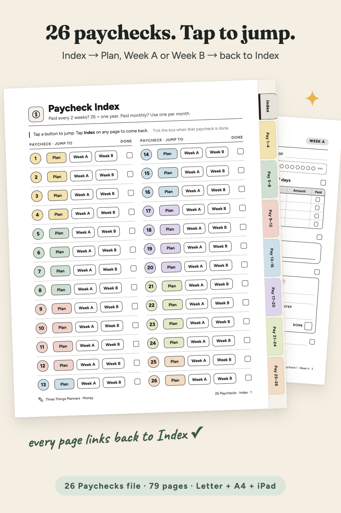
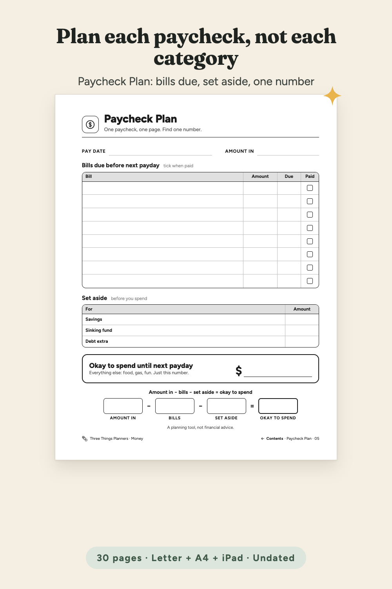
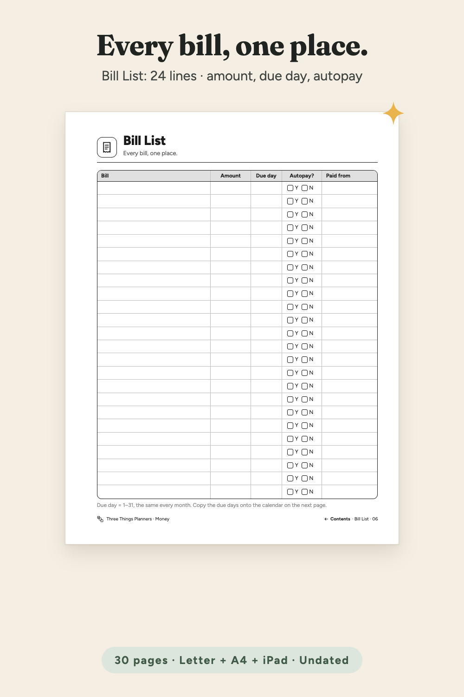
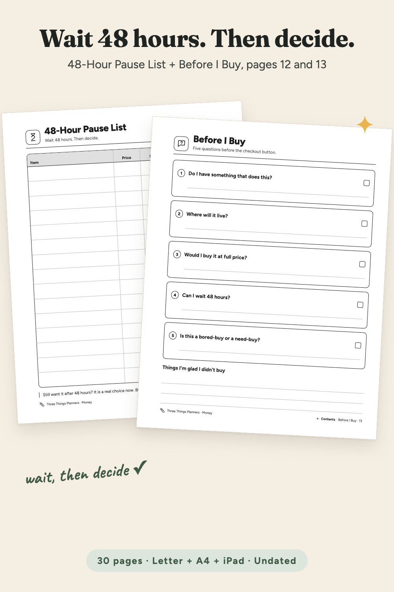
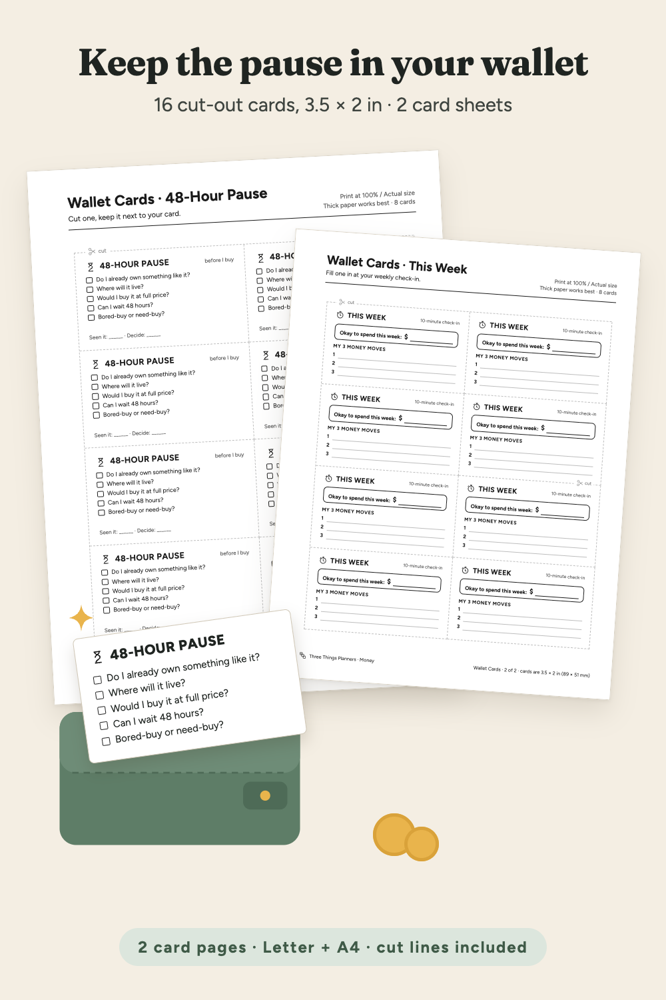
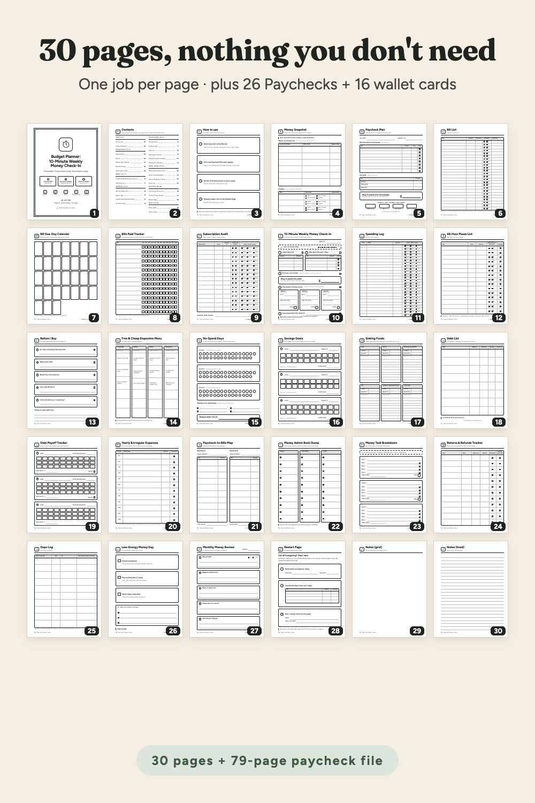

One number, three money moves, ten minutes a week. An undated budget planner built around one weekly check-in, plus a 26 Paychecks tap-to-jump file and 16 cut-out wallet cards. Ink-saving black & white for US Letter + A4, plus an iPad Pastel edition with side tabs.
From Three Things Planners, the planner imprint of Hustle Studio. New shop, no reviews yet.

$6.00 USD, one-time payment, instant download. No subscription.
Buy now: $6 one-time Not sure yet? Get 3 real pages free (PDF, no email)Satisfaction guarantee: if it doesn't work for you, you get your money back. 14-day full refund, no questions asked: email chenphien@gmail.com.
🔒 Secure checkout: Waffo Pancake is our merchant of record. It takes the payment (major cards accepted), handles tax and sends your receipt; we never see your card details. The checkout page shows the product as "ADHD-Friendly Budget Planner: 10-Minute Weekly Money Check-In", $6.00.
14-day refund, no questions asked. If the planner doesn't work for you, email chenphien@gmail.com (Three Things Planners support) within 14 days of purchase with your order email for a full refund. We aim to reply within 2 business days, and the refund goes back to your original payment method through Waffo Pancake (see Terms). Yes, the support address is a Gmail inbox: we're a small studio and a real person reads it. Your payment, receipt and refund are processed by Waffo Pancake, not by that inbox.
Never heard of Waffo Pancake? It is the payment company that sells our files as merchant of record: it runs the card checkout, charges the right tax, emails your receipt and issues refunds. We only receive your order email and the product name.
Try before you buy: the free 3-page sample (PDF) has three real pages: the 10-Minute Weekly Money Check-In, the Bill List and the 48-Hour Pause List, US Letter. No email needed. You can also look through it right on this page.
A new shop, honestly. We're new and have no reviews yet, and we won't invent any. Here is the idea instead: instead of 40 categories, this budget planner asks for ten minutes a week and one number.
Every image below is rendered from the real PDF pages, both the colour iPad Pastel edition and the black & white print files. No buyer photos or reviews yet: the shop is new, and we won't invent any. The free sample lets you print three real pages before you pay.







The actual free-sample PDF. If it doesn't show on your device, download the free sample here.
A screen recording of the real iPad Pastel pages in a phone-size browser viewer, with a pointer and a tap ripple on every tap: cover → Contents → 10-Minute Weekly Money Check-In → footer link back to Contents → Saving side tab → 26 Paychecks Index → Paycheck 7 Plan → Index tab → back on the Index. It was not recorded inside GoodNotes itself.
Budgeting can mean 40 categories, red numbers and guilt. This planner asks for ten minutes once a week. At the end you have one number, what is okay to spend this week, and 3 small money moves, each with a first tiny step (like "open the app and find the cancel button"). Missed a week? The page says it plainly: "Missed last week? Just do this one."
Around that core, one job per page: Money Snapshot, Bill List (24 lines), Bill Due-Day Calendar (days 1–31), Bills Paid Tracker (15 bills × M1–M12), Subscription Audit, Spending Log, 48-Hour Pause List, Before I Buy, Free & Cheap Dopamine Menu, No-Spend Days, Savings Goals, Sinking Funds, Debt List, Debt Payoff Tracker, Yearly & Irregular Expenses, Paycheck-to-Bills Map, Money Admin Brain Dump, Money Task Breakdown, Returns & Refunds Tracker, Oops Log, Low-Energy Money Day, Monthly Money Review, a Restart Page and two Notes pages.
The 26 Paychecks file gives every paycheck its own three pages: a Paycheck Plan, a Week A check-in ("First week after payday") and a Week B check-in ("Second week after payday"). Paid every two weeks, that is one year. Paid monthly? Use one per month.
On an iPad: import the iPad Pastel files into GoodNotes or Notability. Tap a side tab on any page, a line on Contents or a button on the Paycheck Index to jump; tap Contents or Index at the bottom of a page to go back. The black & white files have the same Contents, Index and footer links, just without the tabs.
On paper: print the black & white files at 100%. The left margin is about 20 mm wide for a hole punch. Print the wallet cards on thick paper and cut on the dashed lines. The iPad Pastel files are made for the screen, not for printing.
ADHD-friendly by design. A planning tool, not financial advice: it doesn't recommend any bank, card, app or way to pay off debt. Never write full account numbers or passwords in the planner.
One ZIP download, ADHD-Budget-Planner_All-Files.zip, with 9 PDFs. Each PDF is also listed for direct download after payment. The same list is on page 1 of README.pdf.
| File | Pages | What it is for |
|---|---|---|
| ADHD-Budget-Planner_Letter.pdf | 30 | Planner, black & white print, US Letter 8.5 × 11 in, 56 internal links |
| ADHD-Budget-Planner_A4.pdf | 30 | Planner, black & white print, A4 210 × 297 mm, 56 internal links |
| 26-Paychecks_Letter.pdf | 79 | Paycheck Index + Paycheck 1–26 (Plan, Week A, Week B each), US Letter, 156 internal links |
| 26-Paychecks_A4.pdf | 79 | Paycheck Index + Paycheck 1–26 (Plan, Week A, Week B each), A4, 156 internal links |
| Wallet-Cards_Letter.pdf | 2 | 16 cut-out wallet cards (8 per page, 3.5 × 2 in), US Letter |
| Wallet-Cards_A4.pdf | 2 | 16 cut-out wallet cards (8 per page, 89 × 51 mm), A4 |
| ADHD-Budget-Planner_iPad-Pastel.pdf | 30 | iPad Pastel Edition: the planner in soft section colours with 9 side tabs on every page (for the screen) |
| 26-Paychecks_iPad-Pastel.pdf | 79 | iPad Pastel Edition: the 26 Paychecks file with 8 side tabs on every page (for the screen) |
| README.pdf | 2 | File list, page map, print settings, GoodNotes / Notability steps, money notes, license, refunds |
The 30 planner pages: 1 Cover · 2 Contents · 3 How to use · 4 Money Snapshot · 5 Paycheck Plan · 6 Bill List · 7 Bill Due-Day Calendar · 8 Bills Paid Tracker · 9 Subscription Audit · 10 10-Minute Weekly Money Check-In · 11 Spending Log · 12 48-Hour Pause List · 13 Before I Buy · 14 Free & Cheap Dopamine Menu · 15 No-Spend Days · 16 Savings Goals · 17 Sinking Funds · 18 Debt List · 19 Debt Payoff Tracker · 20 Yearly & Irregular Expenses · 21 Paycheck-to-Bills Map · 22 Money Admin Brain Dump · 23 Money Task Breakdown · 24 Returns & Refunds Tracker · 25 Oops Log · 26 Low-Energy Money Day · 27 Monthly Money Review · 28 Restart Page · 29 Notes (grid) · 30 Notes (lined)
The 79 paycheck pages: page 1 Paycheck Index; Paycheck 1 = pages 2–4, … Paycheck 26 = pages 77–79 (Plan, Week A, Week B).
Is this a physical product?
No. It's an instant digital download: 9 PDFs in one ZIP. Print the black & white files at home or use the iPad Pastel files in a note-taking app.
Which size should I print?
US Letter in the US and Canada, A4 in the UK, Australia, Europe and elsewhere. Both are included and each is laid out for its own paper. Print at "Actual size / 100%". The iPad Pastel files are for the screen, not for printing.
Do the links work in GoodNotes and Notability?
Yes, they are standard PDF internal links: tap a side tab (iPad Pastel files), a line on Contents (planner) or Plan / Week A / Week B on the Paycheck Index, and tap Contents or Index at the bottom of a page to go back. In GoodNotes, links respond in read-only mode.
I'm not in the US. Does it work with my currency?
Yes. Amount columns have no currency sign; $ only appears in the Okay to spend boxes and in two short labels (Target $, Each box = $). Use any currency.
Who is Waffo Pancake, and is checkout safe?
Waffo Pancake is our merchant of record: it runs the card checkout, handles tax, sends your receipt and processes refunds. We never see your card details.
What if it doesn't work for me?
Email chenphien@gmail.com within 14 days of purchase for a full refund, no questions asked. We're a new shop with no reviews yet, which is why there's a free 3-page sample to try first.
$6.00 USD, one-time payment, instant download
Buy now: $6 one-time Not sure yet? Get 3 real pages free (PDF, no email)🔒 Secure checkout by Waffo Pancake, our merchant of record: it handles payment, tax and your receipt, and we never see your card details. Satisfaction guarantee: if it doesn't work for you, you get your money back. 14-day refund, no questions asked: email chenphien@gmail.com, refunded to your original payment method.